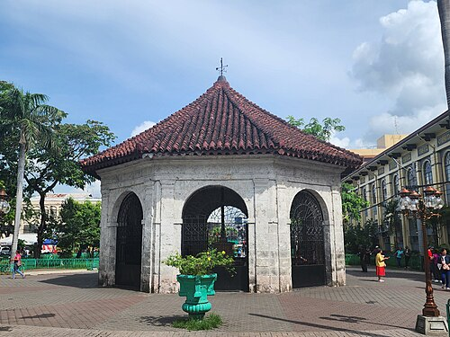

Luzon and Visayas
Baybayin Script
Baybayin was used across the islands before Spanish rule. Read how the script worked and how designers and students are reviving it.
Read the history
Visayas, Cebu City, Central Visayas
Cebu City's historic pavilion shelters a cross traditionally associated with the arrival of Christianity in the Philippines in 1521.
In the middle of Cebu City stands a small pavilion that holds a wooden cross. According to tradition, it marks the place where Ferdinand Magellan's expedition planted a cross in April 1521, when Rajah Humabon of Cebu and many of his people were baptized.
The pavilion sits beside the Basilica Minore del Santo Niño, and many visitors light candles at both places.
Magellan's fleet arrived in Cebu on April 7, 1521. The expedition's chronicler Antonio Pigafetta describes how Rajah Humabon, his wife and many others were baptized a week later, and how a cross was set up on the shore. Magellan gave Humabon's wife an image of the Child Jesus, which became the Santo Niño.
Less than two weeks after the baptisms, on April 27, Magellan was killed at the Battle of Mactan by warriors led by Lapulapu. The expedition left Cebu soon after.
Tradition says the cross was put up to mark the baptisms. Over time the original wooden cross was said to have been chipped away by visitors seeking relics, so the cross now seen in the pavilion is encased in tindalo wood to protect it. Historians and the faithful disagree about whether any part of the original remains, so the cross is best understood as a monument to a memory.
A shelter was built around the cross, and the pavilion's ceiling is painted with a scene of the events it commemorates.
The Spanish fleet reaches Cebu on April 7 and meets Rajah Humabon.
Humabon and many others are baptized, and a cross is planted.
Magellan is killed on April 27, and the expedition leaves.
A new Spanish expedition founds the first permanent settlement in the Philippines.
A pavilion is built around the cross, and it is encased in tindalo wood to protect it.
For many Filipino Catholics the cross is a pilgrimage stop. For historians it is also a reminder that the story of 1521 includes Lapulapu and the people of Mactan, who defeated the expedition's leader.
Baybayin was used across the islands before Spanish rule. Read how the script worked and how designers and students are reviving it.
Read the historyFor over two centuries, ships carried silk, silver and spices between Manila and Mexico. This short film traces one voyage.
Read the historyArchival and new footage of fishing boats, ferries and dockside markets, showing how maritime trade still shapes coastal towns.
Read the history